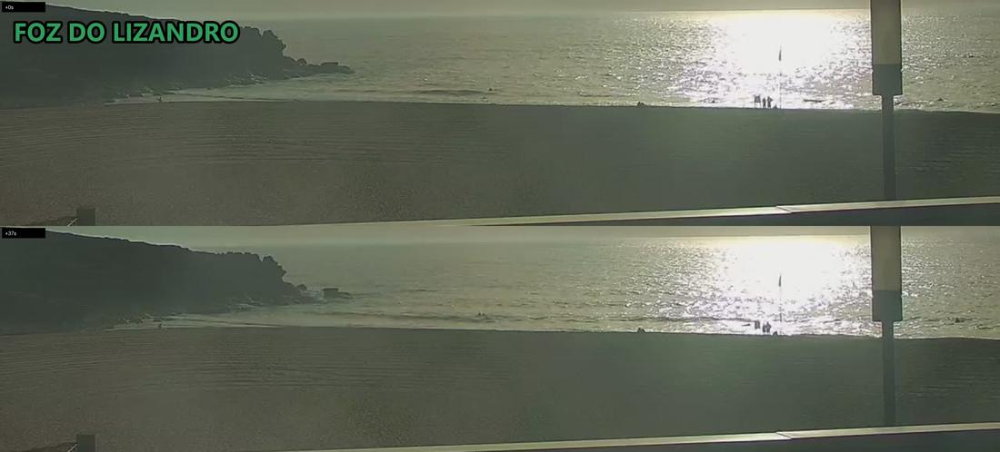
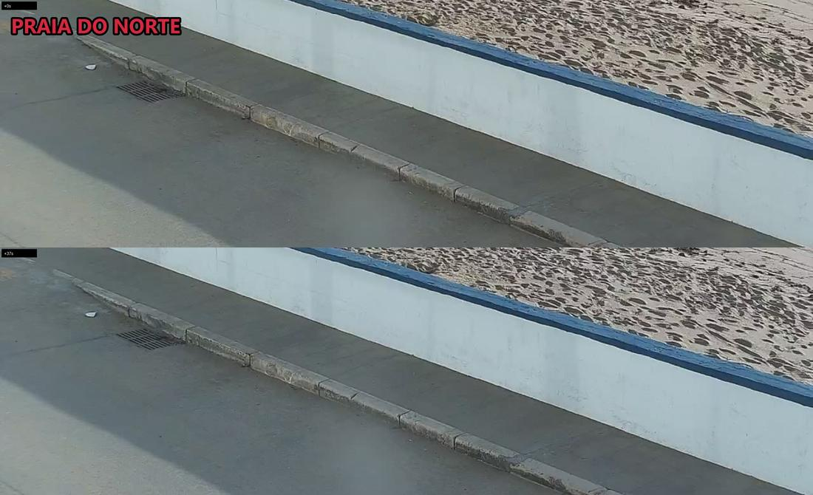
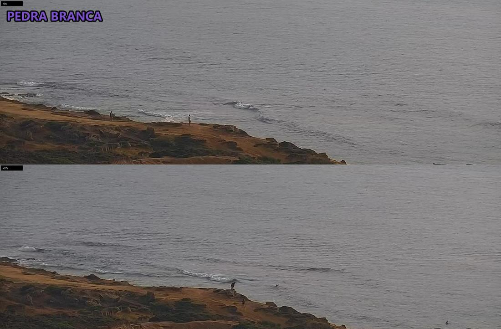
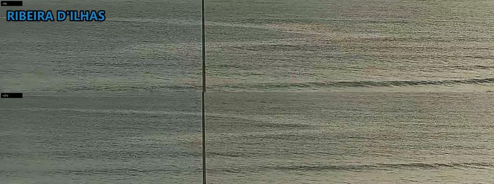
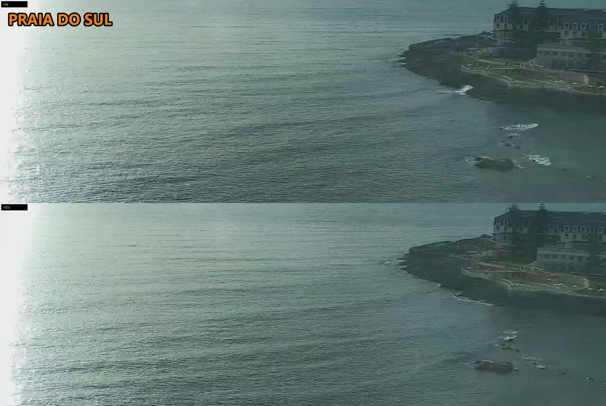

Norte
POOR-TO-FAIR0.3–0.6 m
cam unreadable · 2 on land
detail and crowd crops both framed on the promenade this run, no water in them; sheet shows small shorebreak and 2 anglers on the sand
Last picts >>
Live cam >>
sunset slot · run 52
Ribeira FAIR 0.3-0.6m >>
Norte P-FAIR 0.3-0.6m >>
Sul P-FAIR 0.3-0.6m >>
Lizandro P-FAIR 0.3-0.6m >>
Pedra P-FAIR 0.3-0.6m >>
2. CAM
• Norte — crops framed on the promenade; sheet: small shorebreak. Not countable.
• Sul — glassy, near-flat, no rideable wave. 0 out.
• Ribeira — small clean lines, lineup in sun glare: not countable, ~6 on sand.
• Lizandro — backlit haze, ~2 out, ~8 on the sand (approx).
• Pedra — best shape of the five, a clean peeling right. 2+ out in dying light.
3. VERDICT
Go now or not at all: glassy offshore, knee-thigh. Pedra, else Ribeira.
NEXT 24H Sat: 07:00 P-FAIR · 11:00 P-FAIR · 18:00 FAIR
⭐ Ribeira, now–20:00 FAIR, 5kt NE offshore — the window is right now
NEXT CHECK 07:30 — sunrise; wind stays light, 5kt NNE.
0.3–0.6 m
cam unreadable · 2 on land
detail and crowd crops both framed on the promenade this run, no water in them; sheet shows small shorebreak and 2 anglers on the sand
Last picts >>
Live cam >>
0.3–0.6 m
0 surfers out
glassy and near-flat, only faint lines reaching the point; detail crop scanned in all 3 frames, water empty
Last picts >>
Live cam >>
0.3–0.6 m
cam unreadable · 6 on land
small clean lines, but the lineup sits in full low-sun glare and the detail/crowd crops are mis-framed on open water; ~6 on the sand and promenade
Last picts >>
Live cam >>
0.3–0.6 m
2 surfers out · 8 on land
heavy backlit glare; 2 dark figures resolved in the shallows across the crowd frames, ~8 on the sand incl. a group by the flag - all approximate
Last picts >>
Live cam >>
0.3–0.6 m
2 surfers out · 4 on land
best shape of the five - a clean peeling right on the reef; 2 resolved in the water in fading light, a floor not a full count, 4 watching from the ledge
Last picts >>
Live cam >>




